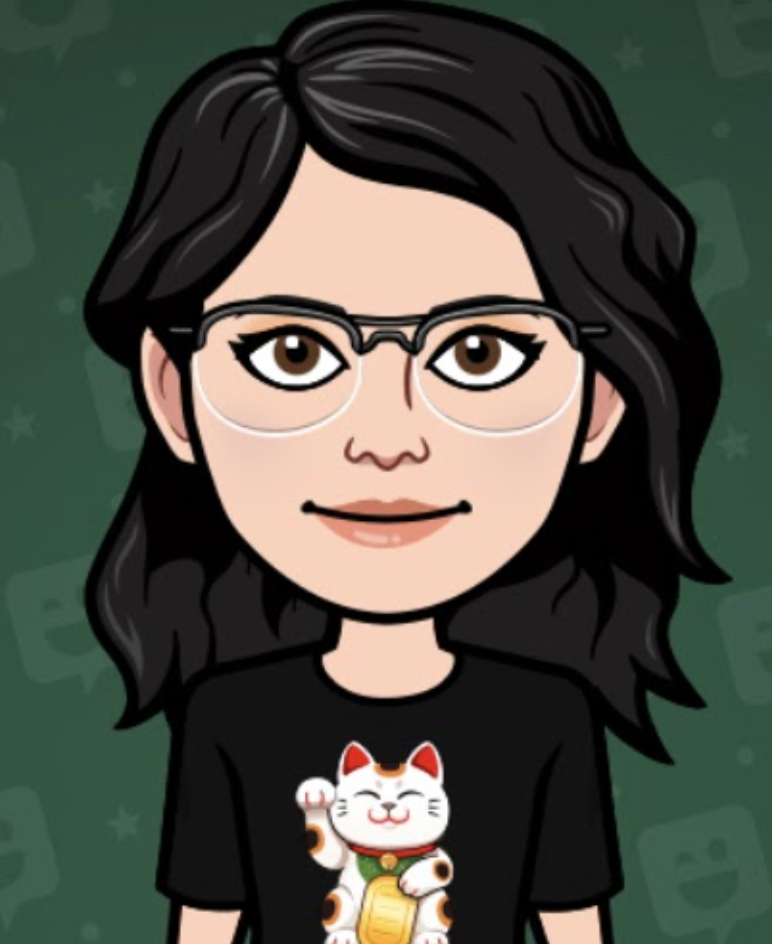

Hello, my name is Sarah. Welcome to my Freedom Project. I am the creator. I am a high schooler at the High School of Telecommunications Arts and Technology. This is a project I made for my Software Engineering Program.
This is my freedom project. Throughout the year, I learn about CSS and HTML. The Freedom Project (FP) is a course-long project where I apply the content I am learning in daily lessons to my own creation, learn new content on my own, reflect upon my learning in a blog, and resent my product and process. It is call "Freedom Project" because in this project we can freely use any topic and skills we know and apply it here.
Throughout this project, I restarted 3 times, to get an result I want. I have learn important skills like being independent and knowing how to resolve a problem on my own, accepting failures and learning that I can become better through these drawbacks, and having a growth mindset and work hard to achieve a product that I am proud of. I mainly get my information on encyclopedia.com. Here are my blogs for which I wrote while doing this project. Click here